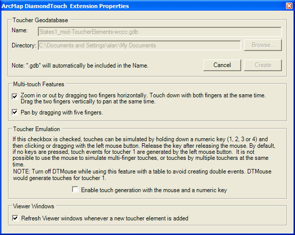

{kind=link}

The ArcMap DiamondTouch extension is an extension for ArcMap 9.2+ GIS software which provides support for simultaneous symbol-drawing by up to four users of a multi-user multi-touch DiamondTouch table. See the Prerequisites and Installation instructions below. This tool is used in conjunction with the DiamondTouch Mouse mouse emulation tool (DTMouse) that ships with DiamondTouch. DiamondTouch is the only touch table that lets touchers draw with different colors or symbols at the same time using just their fingers. The ArcMap DiamondTouch extension integrates this capability into ArcMap. It not only lets people interact at the same time, but it also keeps track of who did what. By turning on and off different toucher-specific layers (by toucher and/or by symbol-type), it's easy to see which elements were added by which participants. Users can also use multi-finger gestures to zoom and pan without explicitly changing the selected tool. These capabilities make the DiamondTouch extension ideal for Emergency Operations Centers, disaster response, and any collaborative situations that can benefit from the more effective communications that are realized with face-to-face discussions.
|
|
When the "Simultaneous Element Sketching" mode is selected from the left side of the DiamondTouch toolbar:
then up to four touchers can simultaneously draw pen, marker, line or area symbols with their fingers on a DiamondTouch table. The second button on the toolbar, which looks like a slider bar, is used to open a toucher timeline, described later. The third button opens a Properties form, also described later. The buttons labeled 1 through 4 on the DiamondTouch toolbar will toggle the visibility of the corresponding toucher's dedicated dockable toolbar window, described next. Note that the DiamondTouch toolbar will be disabled until at least one layer of map data is added to the current document, and that elements which touchers create will use the same spatial reference as the active map data frame.
Each toucher has a dedicated toolbar with which to select a drawing symbol:
Click the pen, marker, line or area symbol radio button to select one of those tools to make that the active tool for that toucher. Then double click on the thumbnail of the symbol on the right side of this toolbar to open a Symbol Selector dialog. Use this dialog to select a different symbol from within the class of symbols, such as "Highway" or "River" when the "Lines" tool is selected. When the delete button is selected in a touchers toolbar, then that toucher can drag his finger to indicate a rectangle in which to delete any of his intersecting elements. Note that by default a toucher cannot delete another touchers elements. The toolbars are dockable windows, which facilitates undocking them to park them near the side of the table at which the corresponding toucher is sitting.
As touchers draw symbols on the map, the symbols are organized in the Table-of-Contents tree by toucher, and then by symbol category ("Scribbles", Markers", "Lines", "Areas") in a new layer in the currently active data frame.
These toucher-created elements are dynamically saved to a file-based geodatabase that is created on-the-fly when the first toucher element is created. The name and location of this toucher geodatabase can be specified using the DiamondTouch Extension Properties form, described below, only before the first toucher element is added. Otherwise a default name for the geodatabase will be created based on the current document that is loaded, such as "streets_mxd-ToucherElements-2007-06-30-01-32-02.gdb." Note that if there are multiple data frames (maps), then each will have its own Touchers layer, but all of the toucher-created features will be saved to this same geodatabase. [WARNING: In this release, renaming the "Touchers" or "Toucher 1" through "Toucher 4" layers is not supported, yet.] If the user decides not to save the document when it is closed, and it has not been saved yet, then the geodatabase will also not be persisted.
Since toucher-created elements are normal ArcMap features, they can subsequently be modified using the other ArcMap tools even on machines that do not have the DiamondTouch extension. For example, a user can start a regular editor session with the Editor toolbar to modify toucher elements.
Add at least one layer of map content before attempting to enable the "Simultaneous Element Sketching" command button. Toucher-created elements will use the spatial reference of the visible content.
Also note that when the "Simultaneous Element Sketching" button is pressed, then touchers can independently and simultaneously each draw with their selected symbol into the map data view area of ArcMap. But when touching anywhere else (such as file menus, the Table-Of-Contents layers, toolbars, and symbol selection pop-up dialogs) the first toucher to touch will assume control of the mouse. Other touchers will be ignored until the first toucher stops touching ("gives up" the mouse). This DTMouse functionality assures that the mouse won't jump all over the display as different people touch the table and try to fight for control of the mouse. Note that since the toucher toolbars and the Symbol Selector dialog rely on the mouse, only one toucher can be touching one of these at a time.
To delete a symbol element as it is being created -- before lifting up the finger being used to draw the element -- simply tap briefly with a second finger anywhere on the display. The in-progress element will be erased, and further touch inputs from that toucher will be ignored until that toucher first stops touching with all fingers.
While the DiamondTouch toolbar is activated, one toucher at a time can pan or zoom the current map view using multi-touch gestures. Panning is performed by simultaneously placing 3 or more fingers on the map image area on the table and then dragging them. Zooming is performed by simultaneously placing 2 fingers on the map image on the table on either side of the location at which to zoom.
Using 2 fingers to zoom. Use 5 fingers to pan
When zooming, hold the two fingers stationary for a second or two (to register the action). You'll know it's registered and ready for zooming when 2 vertical lines (lines of longitude) appear beneath each finger. Then dragging one or both fingers horizontally apart (or together) will precisely zoom the map in (or out). The map will zoom in or out about the current mid-point (along the x-axis) of the two fingers -- not just about the original mid-point. Therefore it is possible to change the center point of the zoom while zooming. Effectively, the initial two finger locations specify two lines of longitude which can be "dragged" together or apart (one at a time or both together) until the desired extent is achieved. Those two lines of longitude remain under the toucher's fingers as the fingers move. These multi-touch features can be turned on or off in the DiamondTouch Extension Properties form, described below. Hint: turn on the ArcMap Overview Map (Window > Overview) while using multi-touch gestures to keep track of which part of the map is currently being viewed. WARNING: These techniques are only suitable for maps which can render fairly quickly.
To help insure coherent behavior, once a user has started panning or zooming, other touchers will be ignored until that user stops touching. Similarly, if any toucher is currently drawing, then no other touchers can start panning or zooming, although they can simultaneously draw.
The DiamondTouch toolbar includes a button called "Timeline of toucher elements" with the image of a slider control. When clicked, this creates a temporary "Touchers Timeline" layer in the Table Of Contents containing all toucher elements in the Touchers layer. It also creates a dockable window containing a "Toucher Element Timeline" slider. This slider can be dragged back and forth to reveal the toucher elements in the order that they were created. When the "Toucher Element Timeline" window is closed, or when the Timeline button on the DiamondTouch toolbar is clicked again, the "Toucher Element Timeline" window is closed and the "Touchers Timeline" layer in the Table of Contents is removed. The "Touchers" layer is automatically unchecked (invisible) while the timeline is open. Note that any toucher elements that are deleted from the geodatabase using the ArcMap Editor will no longer appear in the timeline, but those deleted via the delete button in a touchers toolbar will still appear in the timeline (assuming the timeline is played back in time to the point where that element existed). WARNING: This technique is only suitable for maps which can render fairly quickly.
The toucher timeline button on the main DiamondTouch toolbar opens the Toucher Element Timeline. Drag this slider left or right to replay the sequence of toucher element creations and deletions.
When the toucher timeline is opened, the Touchers layer is temporarily duplicated then unchecked. The duplicated layer (named Touchers Timeline) is linked to the timeline slider shown above.
The button with the picture of a wrench in the DiamondTouch toolbar opens the DiamondTouch Extension Properties dialog. This can be used to configure settings as explained in the dialog.

The path to the Toucher Geodatabase can only be specified before the first toucher element has been created. Once any toucher element has been added to the map, the Name and Directory text fields above, as well as the Browse and Create buttons, become disabled. As a convenience, right-clicking on the "Touchers" layer in the table of contents and selecting "Remove" will delete not only the layers in the table of contents, but the contents of the underlying toucher geodatabase as well. The user will be prompted and may cancel the deletion of the toucher geodatabase at this time. Once the toucher geodatabase is empty, all of the controls in the Toucher Geodatabase portion of the Properties dialog shown above will become enabled so a different Directory and Name can be specified. To save a set of toucher elements in order to create new elements, save a copy of the map document itself (e.g. "File > Save As..." SanFrancisco--withToucherScribbles2007-01-01.mxd"). If no Name and Directory are specified ahead of time, a geodatabase with a default name (similar to that shown in the image above) will be created in the "My Documents" directory. NOTE: The ArcMap DiamondTouch extension will never modify any geodatabase except for the toucher geodatabase that it creates.
The ArcMap DiamondTouch extension is used in conjunction with the DiamondTouch Mouse mouse emulation utility (DTMouse) that ships with DiamondTouch. DTMouse lets you generate all mouse input via touch gestures. Handy DTMouse tricks: Tap or drag with one finger to left click or drag with the left mouse button. To right click, put one finger down then immediately briefly tap (down then up) with a second finger somewhere else. The right mouse button is now being held down. Drag to do a right-drag, or let go immediately to do a right-click. The middle mouse button works the same way except the second finger should tap twice instead of once to hold down the middle mouse button. Touching with two fingers at the same time will cause the mouse to move to the center of the two fingers without pressing any mouse buttons. This is a convenient way to accurately place the mouse with a view unobscured by your fingers. With two fingers still touching, quickly tapping anywhere with a third finger will toggle the left mouse button. Drag your fist vertically to scroll the mousewheel up or down.
The ArcMap DiamondTouch extension works with ArcView, ArcEditor and ArcInfo. Since it is designed to support quick, casual addition of symbols to support a collaborative discussion, there is no need to start an Editing Session. Toucher elements are created or deleted on-the-fly, using a separate Toucher geodatabase that it creates. All of the existing functionality of ArcMap, ArcEditor and ArcInfo (as well as any other extensions) can still be used as is from the table using the DTMouse mouse emulation utility.
Windows 2000 or Windows XP (any version of XP).
ArcMap 9.3 (ArcView, ArcEditor or ArcInfo)
DiamondTouch 2.1+ [Users should be familiar with using their fingers to control the mouse, as described in the DiamondTouch Mouse Users Manual.]
ArcGIS must be installed with the .NET Support option checked to insure that the ESRI .NET Assemblies are installed on the client. If the "C:\Program Files\ArcGIS\DotNet" directory does not exist, then no extensions written in .NET can be used. .NET 3.5 is used.
Use the Windows "Add or Remove Programs" mechanism.
Note that uninstalling the extension also un-registers the DiamondTouchEx.ocx ActiveX control that DTMouse uses. You can re-register that control by opening a DOS prompt in C:\Program Files\Circle Twelve\DiamondTouch SDK 2.2\bin (or wherever it was installed) and executing C:\WINDOWS\system32\regsvr32.exe DiamondTouchEx.ocx.
Uninstall the ArcMap DiamondTouch Extension before uninstalling ArcGIS 9.2. Use the Windows "Add or Remove Programs" mechanism.
Note that uninstalling the extension also un-registers the DiamondTouchEx.ocx ActiveX control that DTMouse uses. You can re-register that control by opening a DOS prompt in C:\Program Files\Circle Twelve\DiamondTouch SDK 2.2\bin (or wherever it was installed) and executing C:\WINDOWS\system32\regsvr32.exe DiamondTouchEx.ocx.
After installing ArcDesktop 9.3, and re-registering the DiamondTouchEx.ocx ActiveX control, install the new (9.3) version of the ArcMap DiamondTouch extension (1.7.34+).
If you ever have trouble starting ArcMap or opening a map document (.mxd file) because of corrupted Toucher information, just delete the toucher geodatabase (.gdb directory; e.g. My Documents\streets_mxd-ToucherElements-2008-08-30-11-59-46.gdb) used by the map document that you're trying to open and then restart ArcMap.
{kind=link}